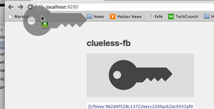
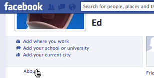
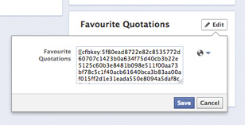

clueless-fb
Usage
- Install the bookmarklet by dragging the symbol above to the bookmarks bar
- Copy the public key from the text field
- Go to your Facebook profile's "About" page
- Paste it there, so that others can send you encrypted messages
- Before reading/writing messages on Facebook, click the bookmark
- 
- 
- 